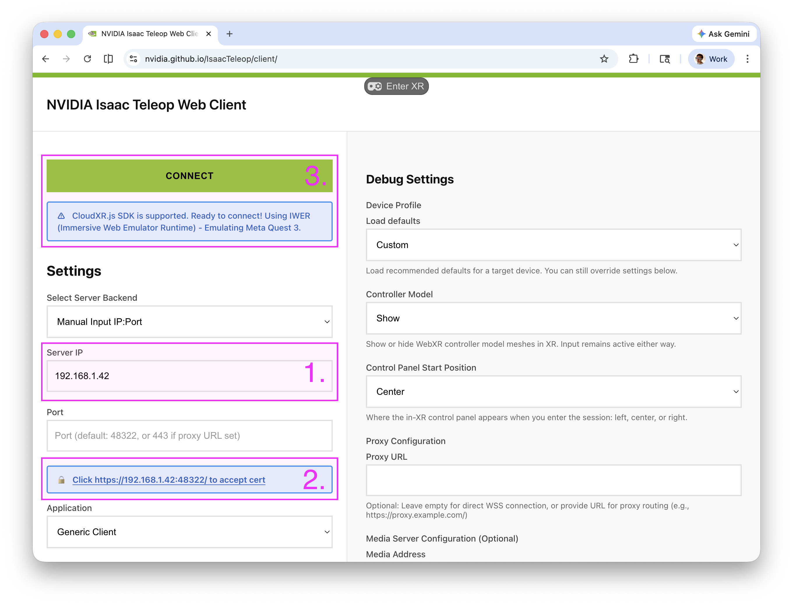
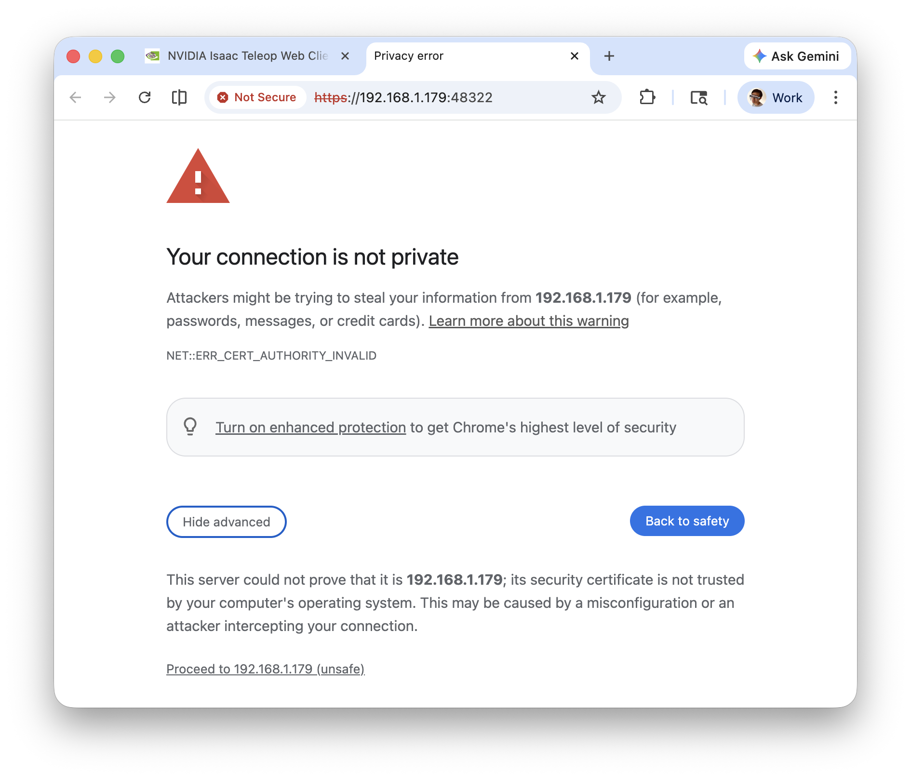
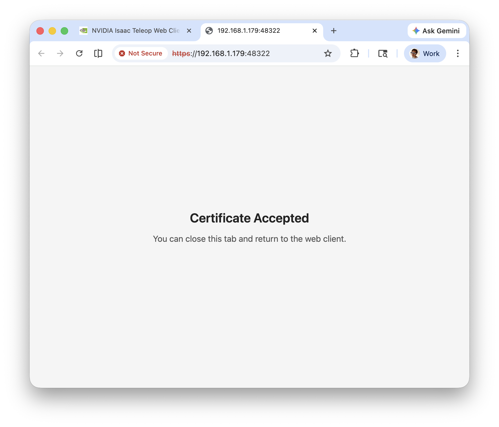
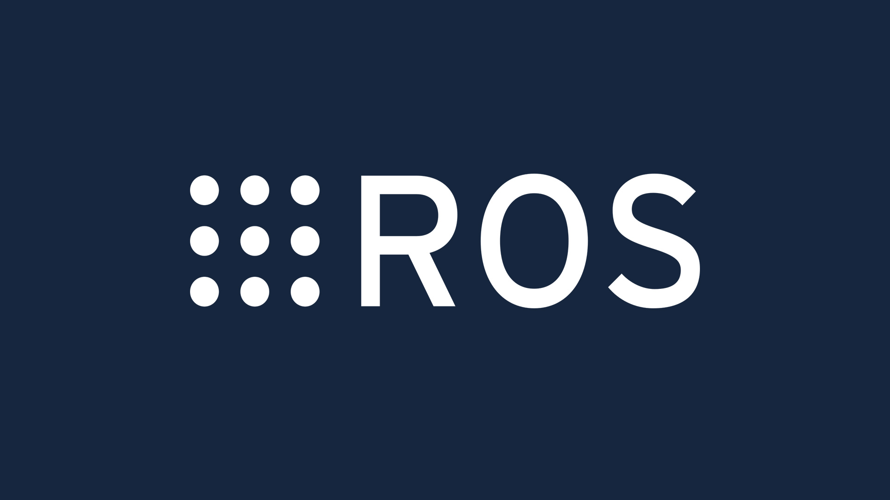

Quick Start#
This guide walks through running a teleoperation session with an XR headset using CloudXR. By the end you will have the retargeting pipeline processing live hand/controller data and printing gripper commands to the terminal.
1. Check out code base (Optional)#
Clone the repository and enter the project directory:
git clone https://github.com/NVIDIA/IsaacTeleop.git
cd IsaacTeleop
As a quick start guide, we don’t need to build the code base from source. However, we still need to clone the repository for a couple quick samples to run.
2. Install the isaacteleop pip package#
In a new terminal, install the package from PyPI (or from a local wheel if you built from source):
# From PyPI
pip install isaacteleop[cloudxr,retargeters]~=1.0.0 --extra-index-url https://pypi.nvidia.com
Instead of installing the package from PyPI, you can build from source and install the local wheel. See Build from Source for more details.
3. Run CloudXR Server#
Start the CloudXR runtime. The first run downloads the CloudXR Web Client SDK and asks you to review and accept the EULA:
python -m isaacteleop.cloudxr
To bypass the interactive EULA prompt (e.g. for CI or headless runs), pass the flag:
python -m isaacteleop.cloudxr --accept-eula
You should see output similar to:

Figure: CloudXR run output#
Important
Keep this terminal open — CloudXR must stay running for the duration of the session. Open a new terminal for the remaining steps.
Also take note of the source /home/dev/.cloudxr/run/cloudxr.env path it mentioned in the
output. You will need to source it in step 6. Load CloudXR environment variables.
CloudXR Configurations (Optional)#
You can also inspect the CloudXR environment variables by running:
cat ~/.cloudxr/run/cloudxr.env
You should see:
export NV_DEVICE_PROFILE=auto-webrtc
...
By default, the CloudXR runtime is configured to use the auto-webrtc device profile for Pico &
Quest headsets. For Apple Vision Pro, the runtime is configured to use the auto-native device
profile.
To do that, you can override CloudXR configurations by creating an env file and pass it to the
CloudXR runtime via the --cloudxr-env-config argument.
echo 'NV_DEVICE_PROFILE=auto-native' > custom.env
python -m isaacteleop.cloudxr --cloudxr-env-config=./custom.env
Again, you can also inspect the CloudXR environment variables by looking at the
~/.cloudxr/run/cloudxr.env file:
Custom CloudXR configurations
Variable |
Default |
Description |
Possible Values |
|---|---|---|---|
NV_DEVICE_PROFILE |
|
Custom device profile to use |
auto-webrtcauto-nativeQuest3AppleVisionPro |
NV_CXR_ENABLE_PUSH_DEVICES |
|
Enable or disable push device overseer for hand tracking |
truefalse |
NV_CXR_FILE_LOGGING |
|
Enable or disable file-based logging, when disabled logs are printed to the console |
truefalse |
export NV_DEVICE_PROFILE=auto-native
...
4. Whitelist ports for Firewall#
CloudXR requires certain network ports to be open. Depending on your firewall configuration, you might need to whitelist them manually.
Meta Quest and Pico headsets
For Quest and Pico headsets (WebXR Client), at the minimum, you need to whitelist the ports for the CloudXR runtime and wss proxy:
sudo ufw allow 47998/udp
sudo ufw allow 49100,48322/tcp
If you are running the WebXR client from source, you need to whitelist the additional ports for the web server:
sudo ufw allow 8080,8443/tcp
Vision Pro client
For Vision Pro client, you need to whitelist the ports for the CloudXR runtime and wss proxy:
sudo ufw allow 48010,48322/tcp
sudo ufw allow 47998:48000,48005,48008,48012/udp
Please see the CloudXR network setup for more details for other network configurations (such as running the CloudXR runtime and wss proxy in containerized environment; or using Vision Pro client).
5. Connect an XR headset#
Meta Quest and Pico headsets
To stream from a Meta Quest or PICO headset, you will need a CloudXR web client. For your convenience, we host a prebuilt CloudXR web client at `nvidia.github.io/IsaacTeleop/client`_. You can just open this URL in your headset’s browser. No need to build or install a separate client.
Tip
For quick validation, you can also open the `nvidia.github.io/IsaacTeleop/client`_ URL in a desktop browser. IWER (Immersive Web Emulator Runtime) will automatically load to emulate a Meta Quest 3 headset.

Figure: CloudXR web client usage instruction#

Figure: Browser privacy warning for self-signed certificate#

Figure: Certificate accepted page#
As illustrated in the figure above, there are 3 steps to connect to your headset:
Enter the IP address of the workstation running CloudXR
Accept the self-signed SSL certificate, which was created automatically during 3. Run CloudXR Server:
Click the Click https://<ip>:48322/ to accept cert link that appears on the page.
In the new tab, you will see a “Your connection is not private” warning. Click Advanced, then Proceed to <ip> (unsafe).
Once accepted, the page will show Certificate Accepted. Navigate back to the CloudXR.js client page.
Click Connect to begin teleoperation.
Note
For advanced usage and troubleshooting of CloudXR, see the CloudXR documentation for more details.
The source code for the web client is in the deps/cloudxr/webxr_client/ directory. Follow the instructions in the official CloudXR.js documentation for more details if you want to run the web client from source.
Apple Vision Pro
For Apple Vision Pro, you will need to build and install the Isaac XR Teleop Sample Client. Follow the instructions in the Isaac XR Teleop Sample Client for Apple Vision Pro repository to build and install the sample client on your Apple Vision Pro.
Note
You will need v3.0.0 or newer of the Isaac XR Teleop Sample Client for Apple Vision Pro to connect to Isaac Teleop.
6. Load CloudXR environment variables#
Open a new terminal and source the CloudXR environment variables posted from the CloudXR runtime in 3. Run CloudXR Server:
Source the setup script so that the OpenXR runtime points to CloudXR:
source ~/.cloudxr/run/cloudxr.env
Important
Make sure to run the rest of the commands in the same terminal. Or if have to open a new terminal, source the CloudXR environment variables again.
7. Run a teleop example#
Run the simplified gripper retargeting example. This demonstrates the full
pipeline: reading XR controller input via CloudXR, retargeting it through the
GripperRetargeter, and printing the resulting gripper command values:
python examples/teleop/python/gripper_retargeting_example_simple.py
Once running, squeeze the controller triggers on your XR headset to control the gripper. You should see periodic status output:
============================================================
Gripper Retargeting - Squeeze triggers to control grippers
============================================================
[ 0.5s] Right: 0.00
[ 1.0s] Right: 0.73
[ 1.5s] Right: 1.00
...
The example runs for 20 seconds and then exits. To try other examples, see
examples/teleop/python/ — for instance:
se3_retargeting_example.py— maps hand or controller poses to end-effector poses (absolute or relative)dex_bimanual_example.py— bimanual dexterous hand retargetinggripper_retargeting_example.py— full gripper example with more configuration options
Next steps#

Teleoperation in Isaac Lab
Follow instructions in Teleoperation and Imitation Learning with Isaac Lab Mimic to know more about how to collect demonstrations with Isaac Lab and how to augment them with Isaac Lab Mimic and train imitation learning policies.
If you are new to Isaac Lab, follow instructions in Isaac Lab Quick Start to get started.

Teleoperation with Isaac ROS
Check out the examples/teleop_ros2/ directory for an example on how to make a ROS 2 message publisher using Isaac Teleop.
We are also working on a Unitree G1-based end-to-end teleoperation, data collection, and imitation learning solution for ROS2 in an upcoming Isaac ROS release. Stay tuned!
ROS is a trademark of Open Robotics.
More Information#
Teleop Session — learn how
TeleopSessionworks and how to build custom retargeting pipelinesBuild from Source — build the C++ core, Python bindings, and plugins from source